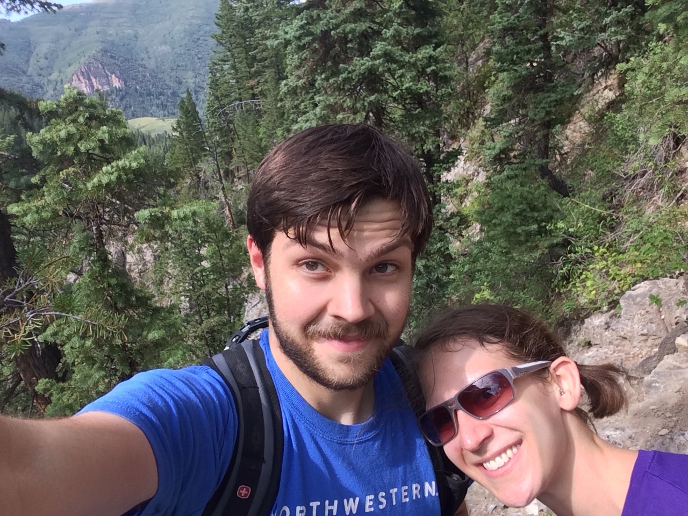

Ian Coley
Ex-Hill Assistant Professor of Mathematics
Rutgers University
Department of Mathematics
Piscataway, NJ 08854-8019
Office
The Internet
Office Hours
None to speak of
E-Mail
rutgers at iancoley dot org
Teaching
Spring 2022:
Math 535
Fall 2021:
Math 251H
,
Math 311
Summer 2021:
GRE Math Subject Workshop 2021
Spring 2021:
Math 311
,
Math 560
Fall 2020:
Math 136
Spring 2020:
Math 351
Fall 2019:
Math 151
My resources for the
Math GRE Subject Test
Seminars
Rutgers Postdoc Colloquium
, not currently running
Algebra and Geometry Learning Seminar (AnGeLS)
, under new management
Rutgers Algebra Seminar
Princeton Algebraic Topology Seminar
Math Social Media / Organisations
Algebraic Topology Discord
Algebraic Geometry Discord
Category Theory Zulip
. Email me for an invite link -- no permanent ones available
MathOverflow Homotopy Theory Chatroom
Spectra
, the association of LGBTQ mathematicians
Just Mathematics Collective
Research Interests
Derivators
and abstract homotopy theory
Higher Algebraic K-Theory and category theory
Papers
Stabilization of derivators revisited
, arXiv:1802.04343. Journal of Homotopy and Related Structures, 14 (2019), no. 2, 525-577.
The K-theory of left pointed derivators
, arXiv:2009.09063. Submitted.
The theory of half derivators
, arXiv:2010.12057. Documenta Mathematica, 27 (2022), 655-698.
Localization, monoid sets and K-theory
, arXiv: 2109.03193. Submitted.
Presentations
"Derivators as an enhancement of triangulated categories".
Seminar of the Department of Algebra
, Universidad de Sevilla, 10 July 2017
"The K-theory of derivators".
Recent developments in noncommutative algebra and related areas
, University of Washington, 17 March 2018
"A brief history of Algebraic K-theory".
Seminar of the Department of Algebra
, Universidad de Sevilla, 4 July 2018
"The K-theory of derivators".
K-theory ICM Satellite
, Universidad de Buenos Aires, 27 July 2018
"The K-theory of derivators".
Topology Seminar
, University of Chicago, 22 January 2019
"The stabilization of pointed derivators".
Workshop on Derivators
, Universität Regensburg, 10 April 2019
"What is a derivator?".
Algebra Seminar
, Rutgers University, 9 October 2019
"The algebraic K-theory of derivators".
AMS Fall Eastern Sectional Meeting
, Binghamton University, 12 October 2019
Cancelled talk on the stabilization of derivators for the AMS Spring Southeastern Sectional Meeting, University of Virginia, 14 March 2020
Older stuff (Caveat lector! May contain errors, especially when noted.)
An explicit construction of an expander family, Northwestern University Undergraduate Honours Thesis. (
PDF file
)
Abelian Patterns and Periods, UNC Greensboro REU Presentation. (
Beamer file
)
UCLA Algebra Qualifying Exam Solutions, Fall 2009 - Spring 2014. (
PDF File
)
UCLA Geometry/Topology Qualifying Exam Solutions, Spring 2008 - Spring 2014. (
PDF File
)
Non-mathematical Papers
Virgil's
Aeneid
in Neronian Literature, Joseph Clyde Murley Prize Honourable Mention 2013. (
PDF file
)
Augustus, Ekphrasis, and the Shield of Aeneas, Joseph Clyde Murley Prize Winner 2012. (
PDF file
)
Empowering LGBT Scientists
, an article I wrote for the Medill Equal Media Project at Northwestern
The simple sacral dimple: diagnostic yield of ultrasound in neonates, published in
Pediatric Radiology
. (
PDF file
)